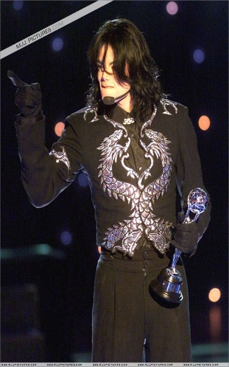
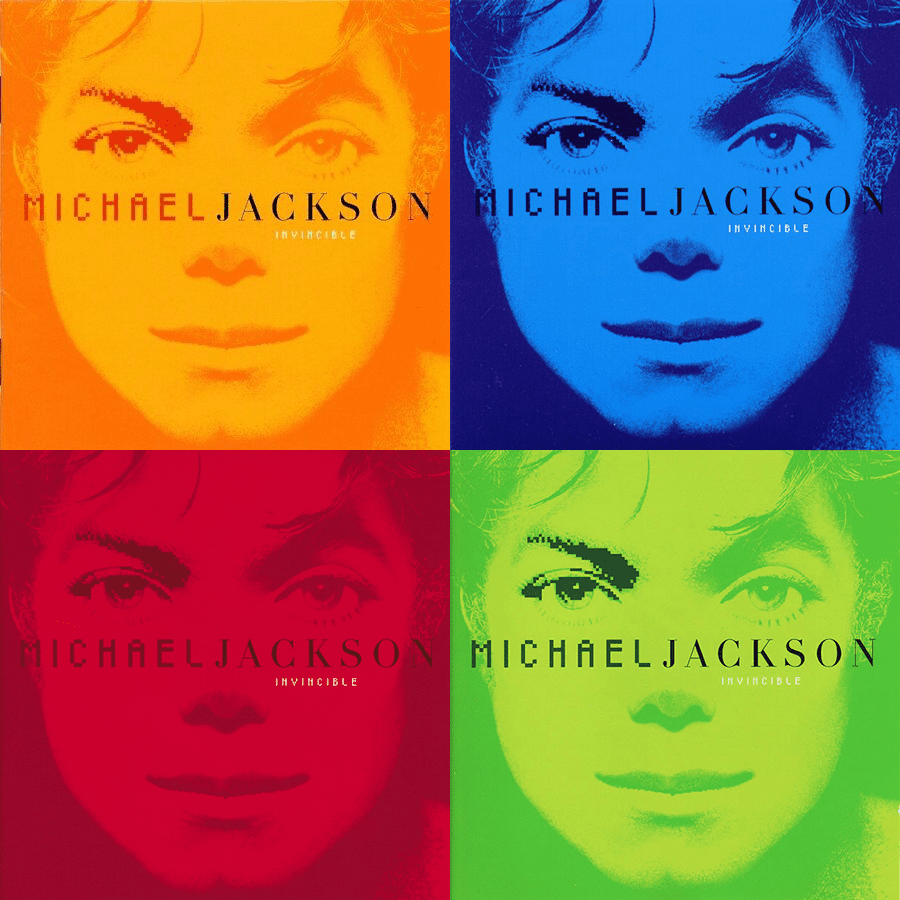
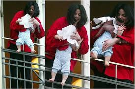
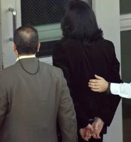
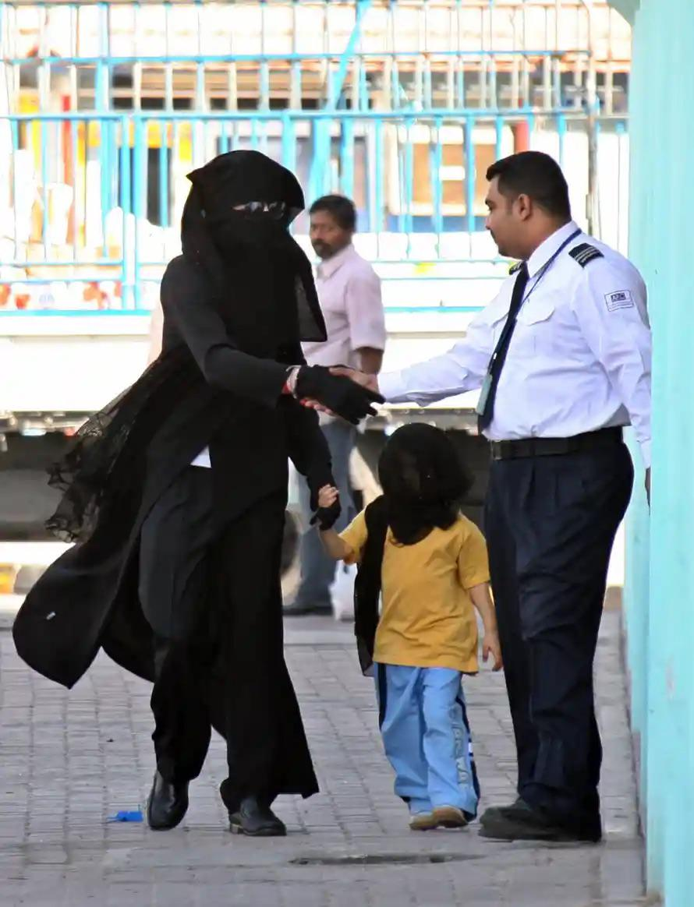
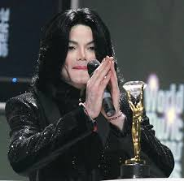
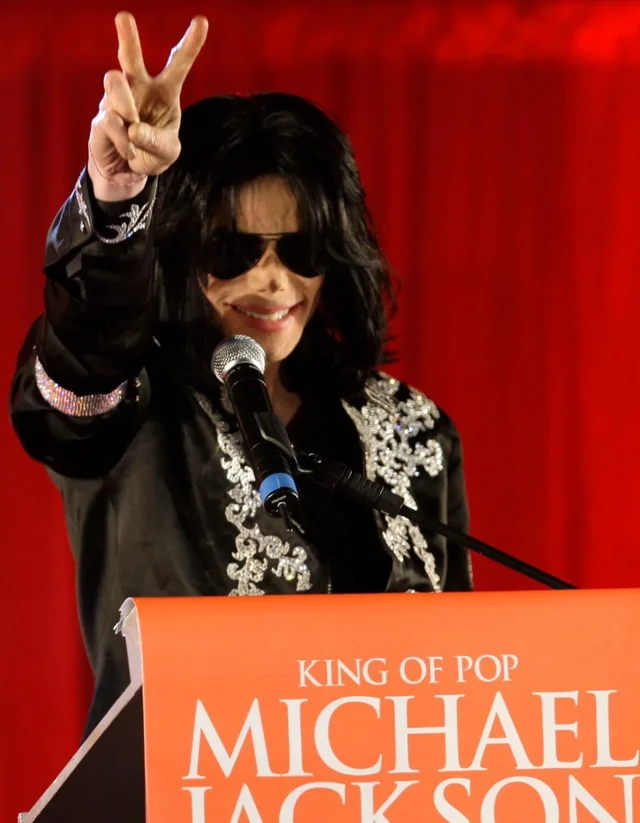
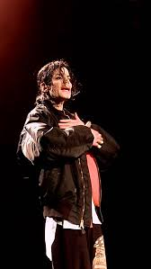

Michael en el nuevo milenio
Para el año 2000 Michael se mostraba mas recluido, viviendo en Neverland Ranch junto a sus hijos, casi sin apariciones públicos, excepto durante los World Music Awards en Monaco, donde recibió el premio a “artista del milenio”.
En 2001, Michael anuncia su vuelta a la música para lanzar el álbum “Invincible”, lo cual no fue nada fácil ya que Michael estaba en pleno conflicto con Sony Music y en especial con Tommy Mottola, quienes le cortaron el presupuesto para la promoción del álbum y lo llevaron al mayor fracaso artístico de su carrera.


Invincible
Lanzamiento:
30 de octubre, 2001
Ventas:
+10.000.000 de copias (aprox.)
Records:
Álbum más costoso de la historia al momento de su lanzamiento (más de 30 millones de dólares de producción).
Debutó en el #1 en múltiples países.
Incluye éxitos como «You Rock My World» y «Butterflies». Último álbum de estudio lanzado en vida por Michael Jackson.
Premios:
1 American Music Award (2002)
1 Billboard Music Award (2002)
Este mismo año, Michael cumplía 30 años como solista y los festejo el 7 y 10 de septiembre en el Madison Square Garden, junto a sus hermanos y otros artistas como Whitney Houston, Usher, Britney Spears y Destiny’s Child, entre otros.
Tras el atentado a las Torres Gemelas Michael reúne a un gran grupo de artistas para un gran concierto benéfico en octubre del 2001, pero para estas fechas los problemas empezaban a aparecer.


Llegado 2002 la salud de Michael Jackson se veía deteriorada, se lo veía muy delgado, sensible y según cercanos empezaba a tomar medicinas para dormir y para la ansiedad, aun así, continuaba su lucha contra Sony rodeado de polémicas como mostrar a su hijo desde un balcón en Berlín.
Pero las polémicas explotarían más en 2003, cuando Martin Bashir lanza el documental “Living With Michael Jackson”, donde lo retrato como excéntrico y edito el documental para hacerlo quedar mal (cosa que ya había hecho años antes con Lady Diana).


En dicho documental resaltó mucho una parte donde aparece Gavin Arvizo, un niño con cáncer que luego denunció a Michael por abuso sexual e intoxicación alcohólica a un menor.
El caso escaló hasta pedir el arresto del Rey del Pop, que se llevó a cabo el 20 de noviembre del 2003. Esas imágenes dieron vuelta el mundo y dieron inicio a un largo periodo legal para el “Juicio del Siglo”, llevado a cabo durante 2005 y que terminaron en un Michael Jackson destrozado por la prensa, con una salud general muy mala y con un veredicto dado el 13 de junio, en el que el jurado declaró que Michael Jackson, El Rey del Pop, era totalmente inocente de todos y cada uno de los cargos presentados.
Tras los juicios Michael abandona Neverland y se muda a Bahréin donde se recluye y su única aparición pública es en los World Music Awards donde recibe el premio Diamond por ser el artista con más ventas en toda la historia.


Pensando en retirarse Michael anuncia en 2009 la gira “This Is It” pensada para hacer 50 conciertos y agotando en pocas horas más de 750.000 entradas.
El 24 de junio, después de meses de ensayos, se realiza el último ensayo, con toda la energía Michael ensaya “Earth Song” y se despide de su equipo con un discurso motivacional.

